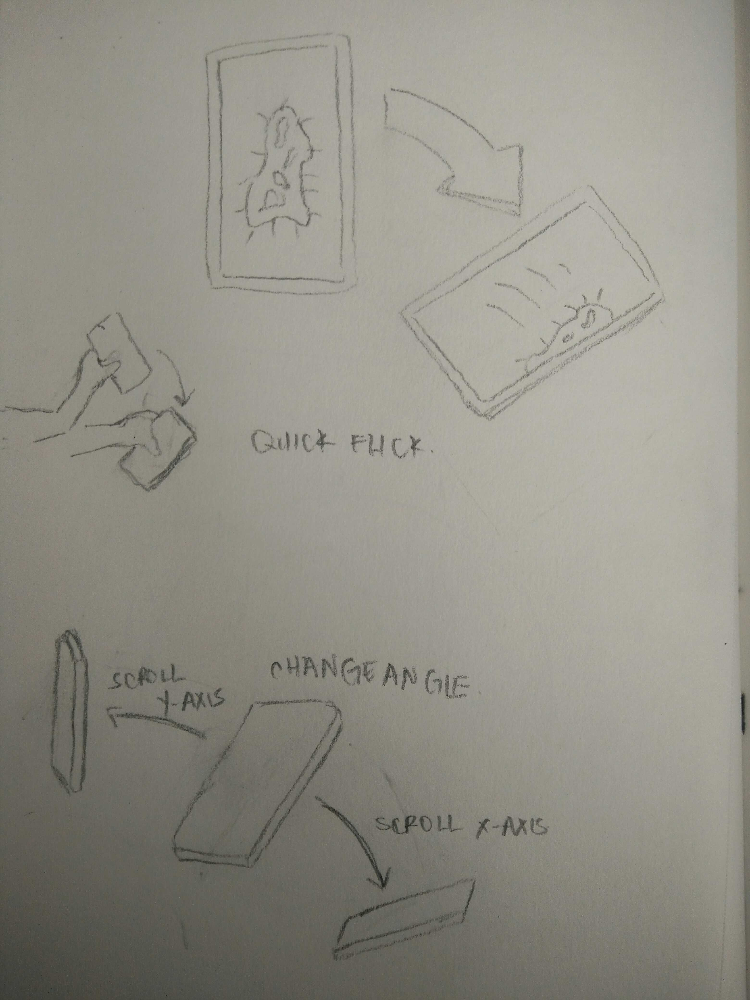
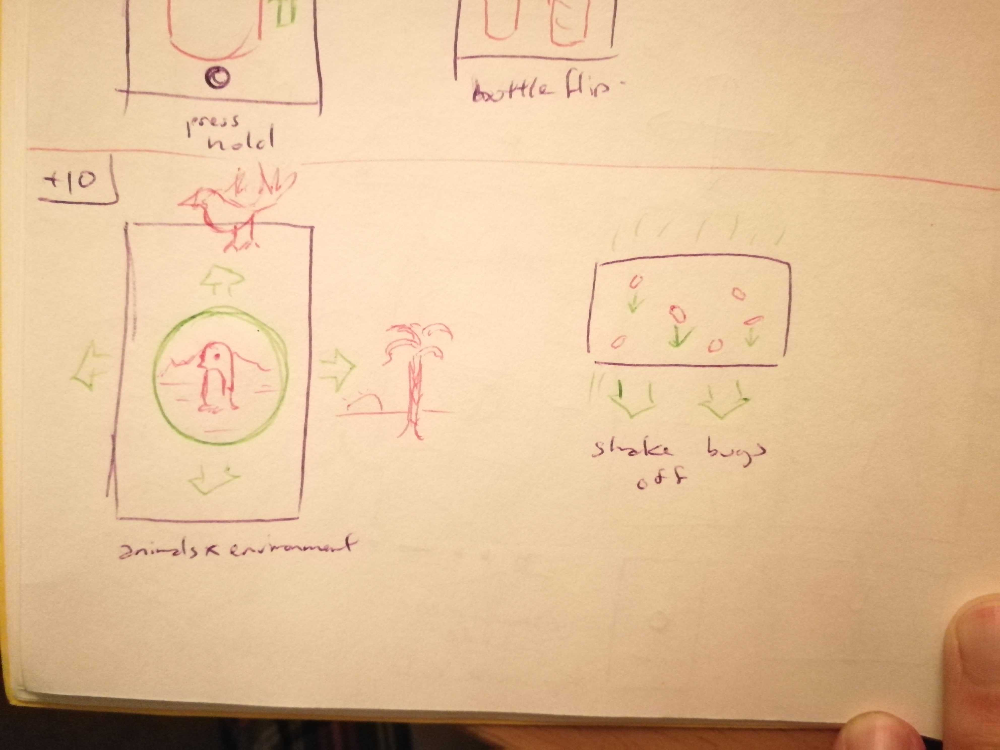
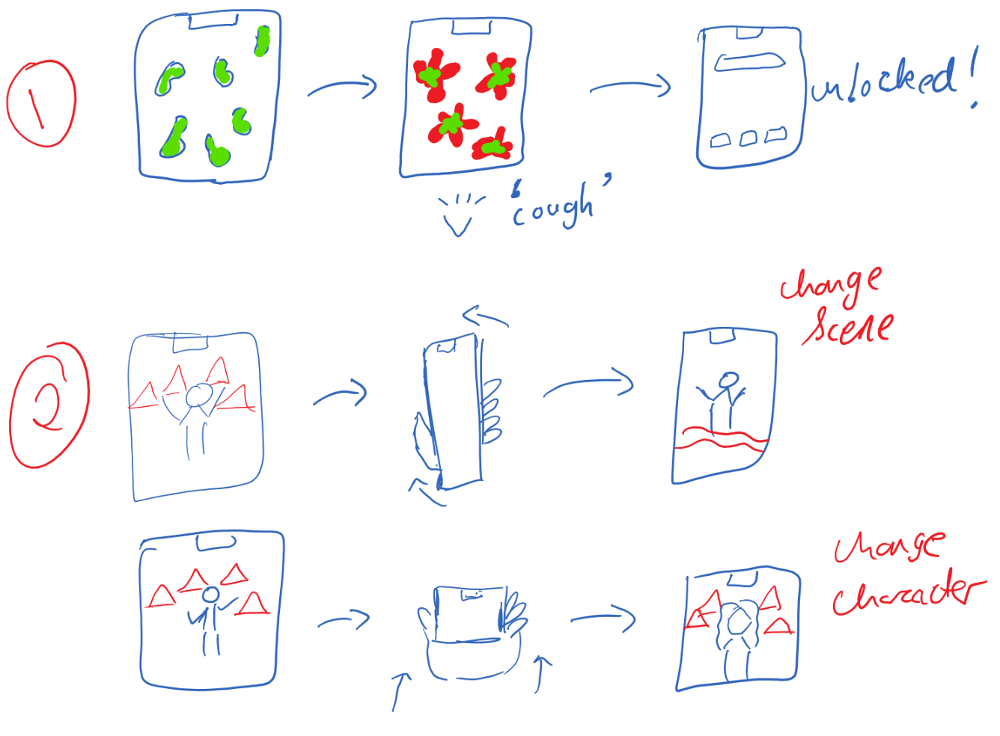
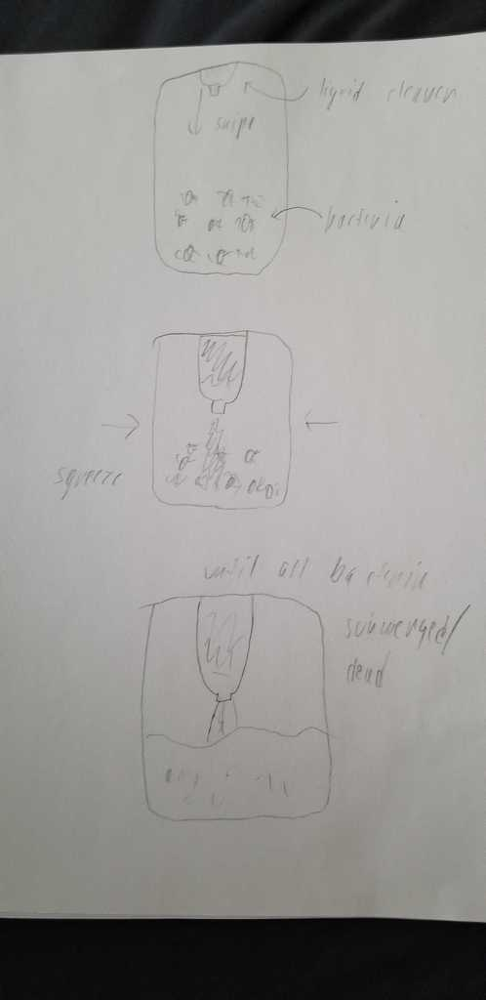
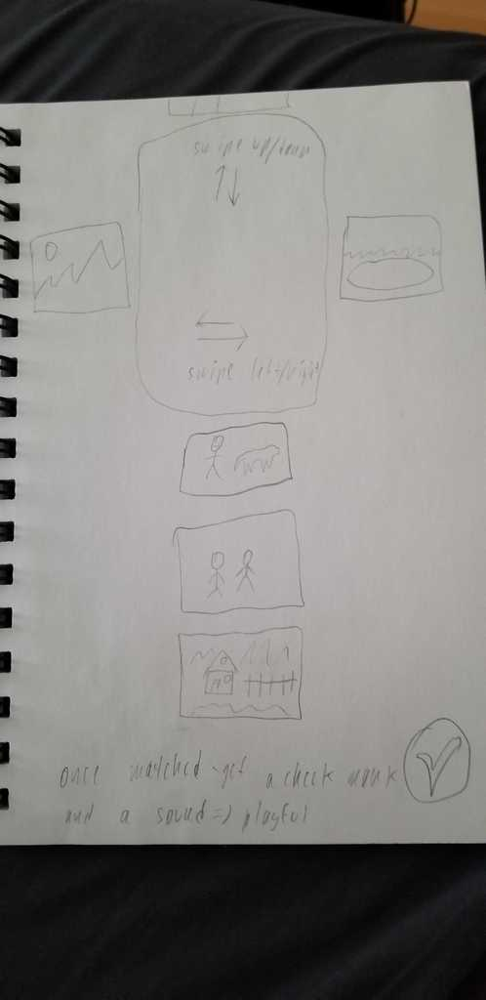

The objective of this project was to develop novel ways of unlocking a phone. The central idea was to have a unique action preventing users form accidentally activating the functionality of their phones, as seen in iPhone's swipe to unlock (not necessarily related to secuirty).
Design and Sketches
My personal sketches reflected realistic and minimalist ways of unlocking a phone that could be an alternative to the ones currently in place on modern smartphones. The idea was to find a simple, unique action that was not easily replicated accidentally.
Gesture based:
Sensor based:
Refinement
After presenting the ideas in class, we discussed over which ideas were the best and we settled on JAcky's idea for matching a background and a subject as well as Payal's germ destroyer idea.
We felt these were creative and fun ideas that allowed for versatility in terms of how we wanted to approach it. As we had not yet decided which one would incorporate gestures and which one sensors, we each set about creating refined sketches to test out differing ideas.
My idea was to incorporate gestures into either shaking the germs until they 'lost grip' and fell off the screen, or blowing on them to push them off. The idea could even be combined to weaken the germs until you could then blow them off.
The other idea I had was to use a simple tilt to shift between the poses and backgrounds instead of gestures.
The other group members devised the following sketches:

Dennis' sketches

Jacky's sketches

Payal's sketches


Robert's sketches
Implementation
For the production of the two lock screens, my group decided to split into two and focus on each tackling one of the designs. After reconvening and reviewing our sketches, we decided that the germ idea had more merit employing sensors in some way, while the background subject match made the most sense using simple gestures.
In the germ popper group, we discussed what sensors we wanted to use and how we wanted that to reflect the removal of germs. Out of all of us, we each incorporated shaking in some fashion, so decided it was a nice concept to follow through with.
In order to use shaking, we thought about how that would be reflected tot he user and so after some debate concluded that having the germs explode and then proceed to unlock the phone would be the most visually appealing and satisfying.
Finally, in the actual production, I implemented the animation in android studio from the assets provided by Payal and combined it with the shake detection that Robert implemented.